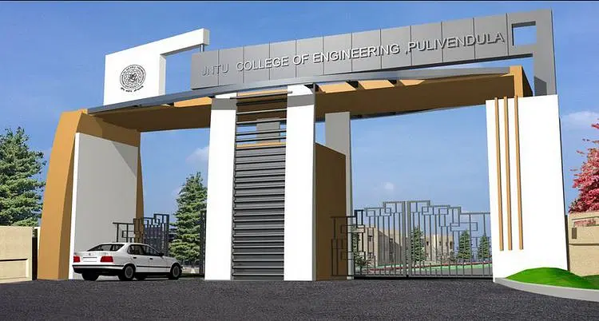
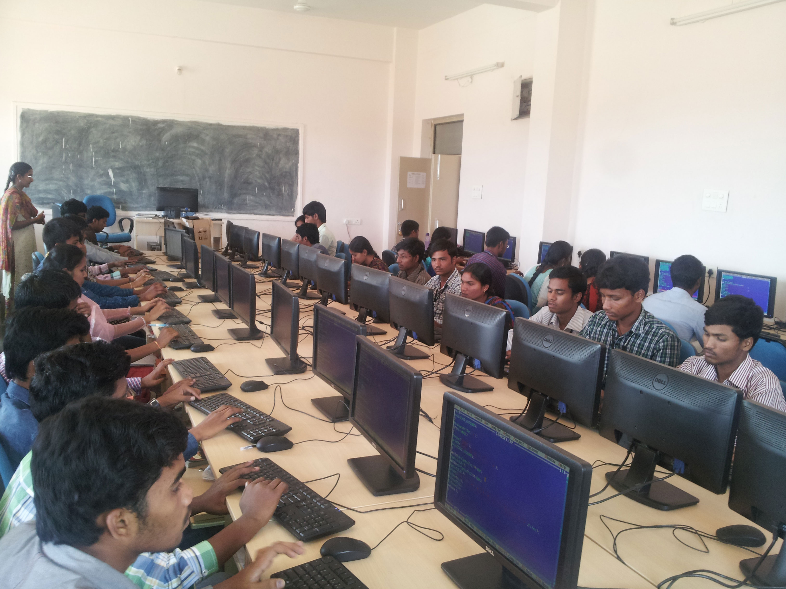

CONTACT NO:7670902300
EAMCET CODE :JNTP.

ABOUT JNTUCEP
University College of Engineering, Pulivendula, J.N.T. University Anantapur has been established with social objective of providing technical education accessible and affordable to the rural people. The college foundation was laid on 25th December 2005 by the hands of our beloved former Chief Minister of Andhra Pradesh, late Dr.Y.S.Rajashekhara Reddy garu.The institute is oneof the University Colleges of JNTU Anantapur, Ananthapuramu (State University) and isa government run institute With its dedicated faculty, staff and sincere efforts of studentsput together the institute has earned good reputation in the J.N.T.University Anantapur region..